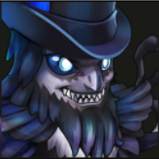
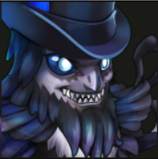

Notes about game information
There are 6 different factions in the game:
- Way of Eternity
 

- Way of Progress


- Way of Chaos


- Way of Nature


- Way of Mystery


- Way of Honor


Some heroes' skill rank purple allows those in the same factions as them to receive
the same buffs and create combos against other teams. Among the factions, some heroes
have explicit mixed factions synergy which means they are versatile
and can be used in many different teams.
Other than factions and heroes to look out for, take note of the damage numbers dealt by them too.
Colours in the skill description and in battle helps to let you know what damage your heroes are dealing.